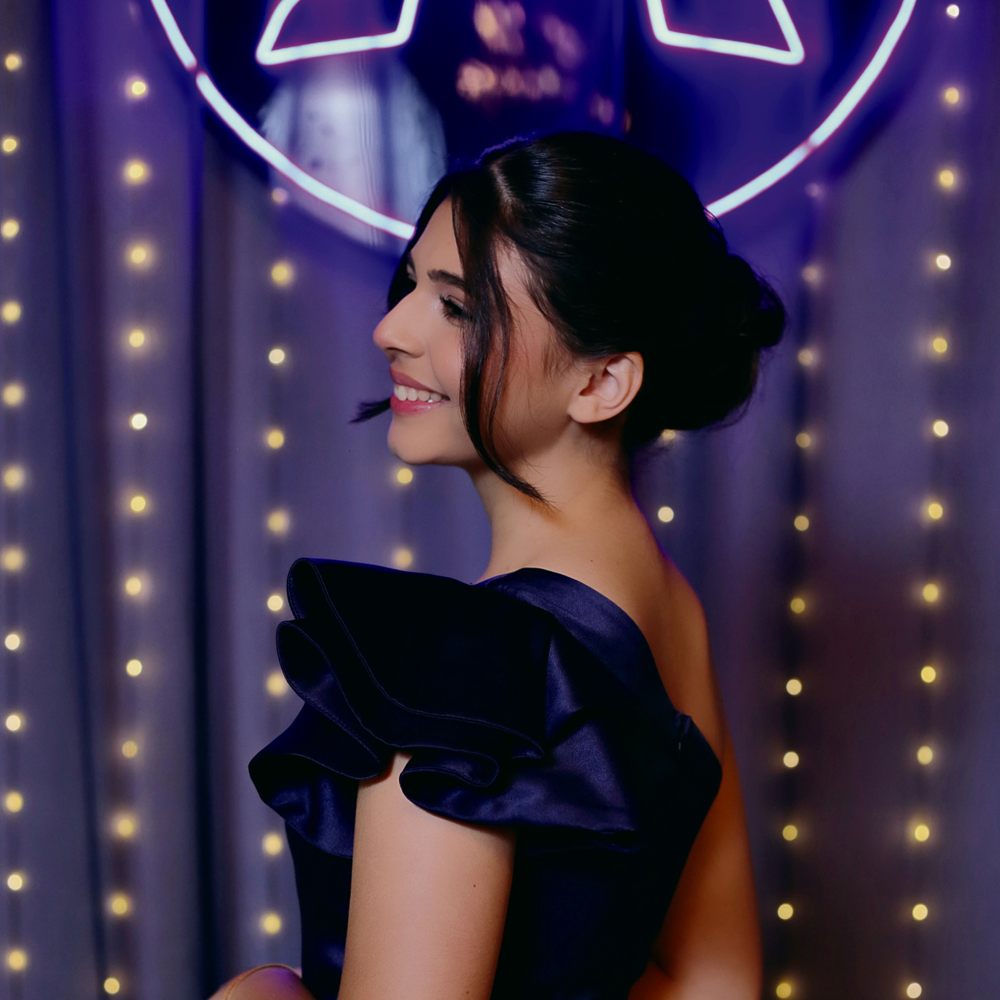
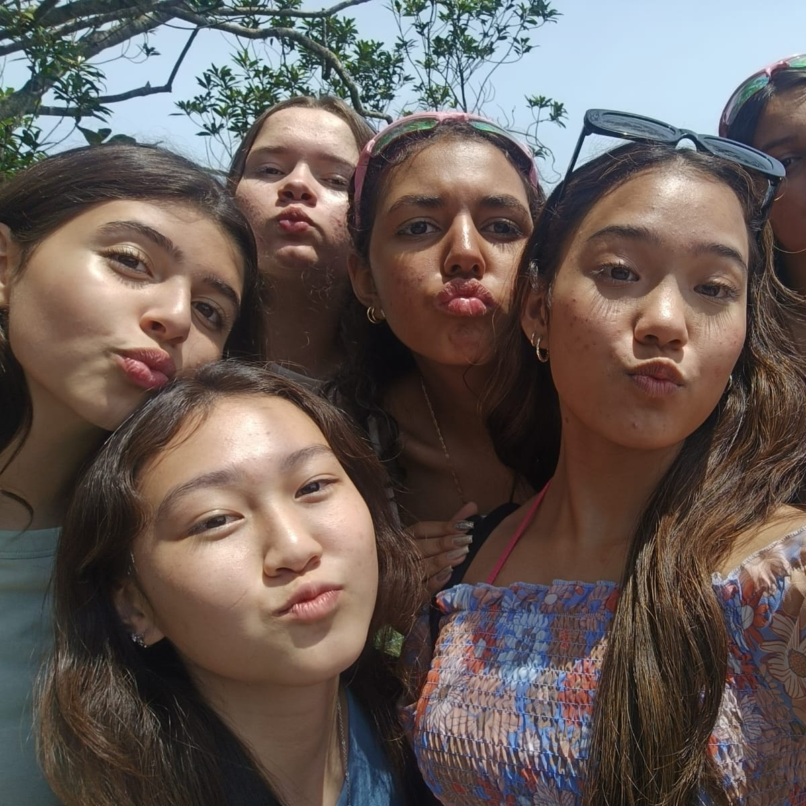
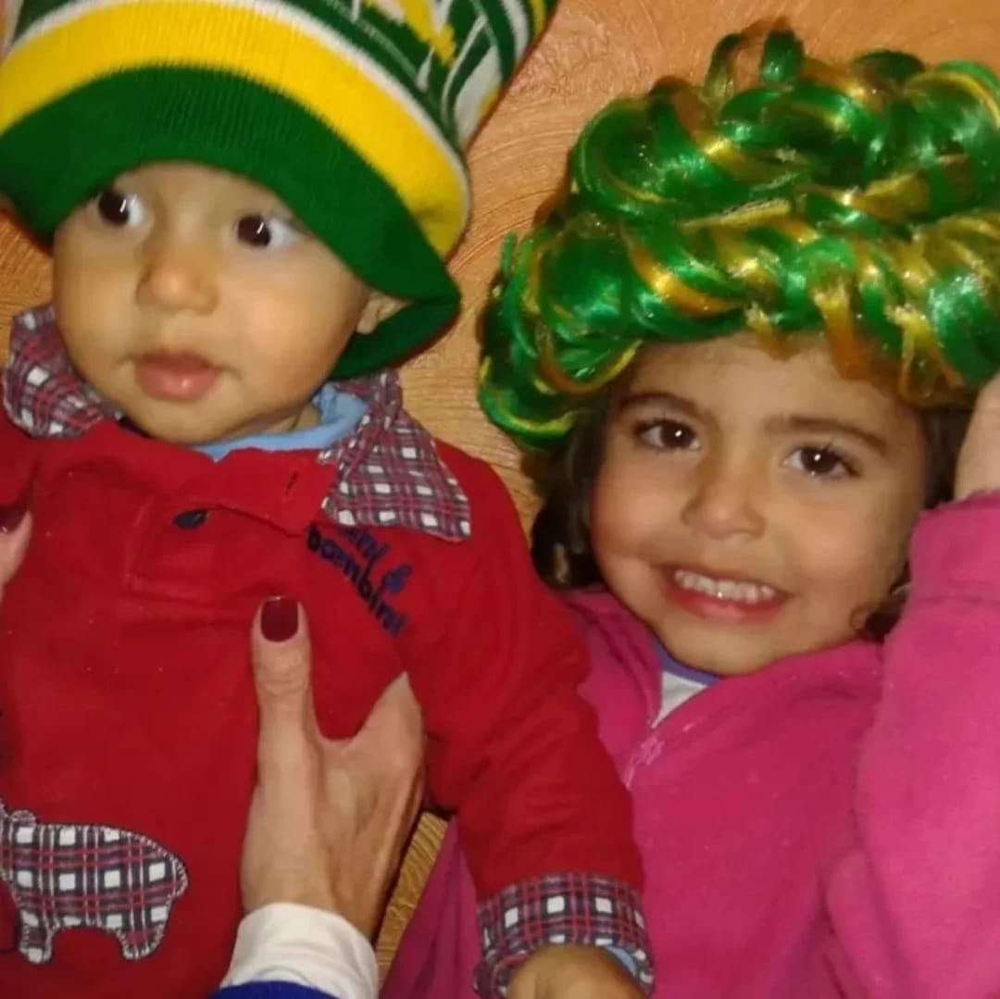
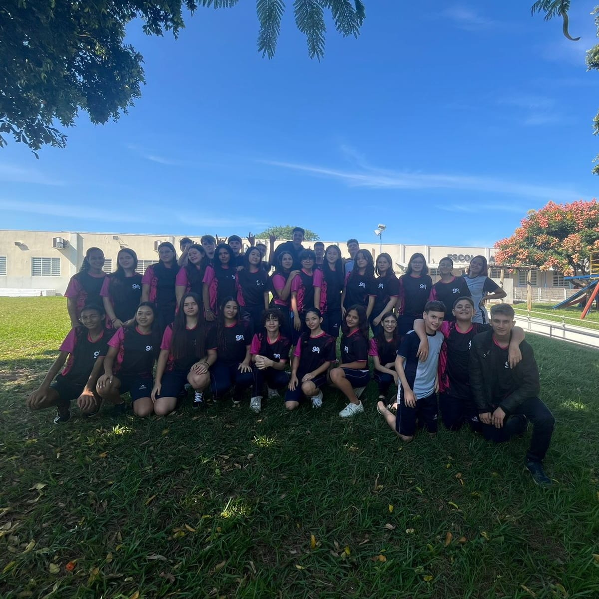
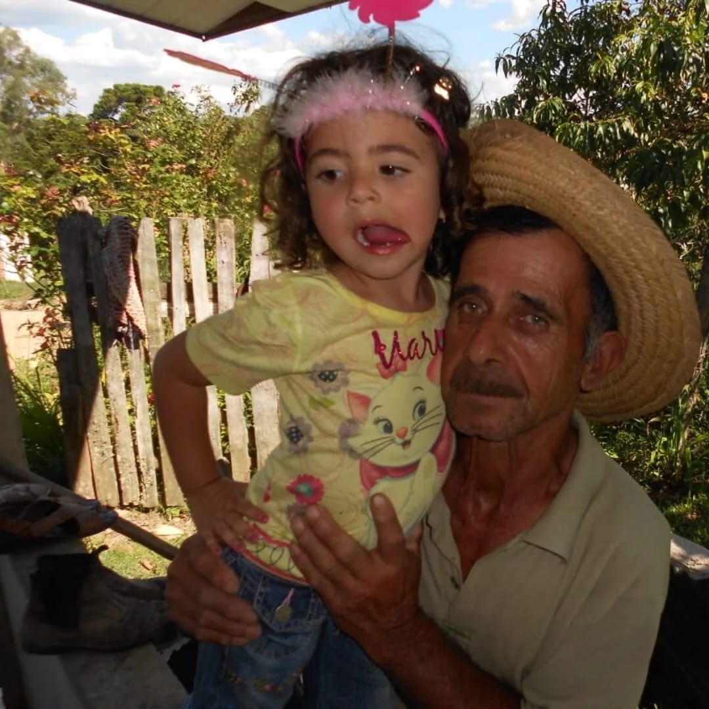
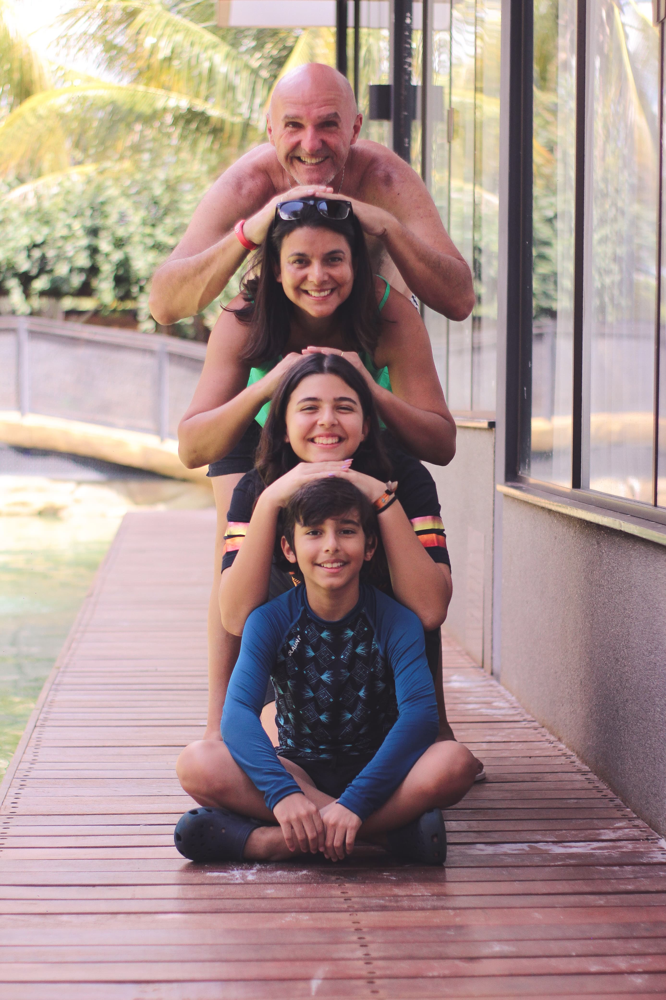

Sofia Wiese
Profissão: Futura arquiteta
Origem: Curitiba - Paraná
Idade: 14 anos
Lembranças




Pessoas, coisas ou sonhos
Minhas pessoas favoritas: Minha mãe, meu pai e meu irmão.
Minha família de casa sempre foi o meu porto seguro. Desde quando eu era pequena minha mãe e meu irmão nunca saíram de perto de mim, já meu pai sempre trabalhou viajando, mas não por isso deixou de dar amor e atenção para mim e toda a família. Eu amo muito eles e sem dúvidas são a coisa mais especial do mundo pra mim.